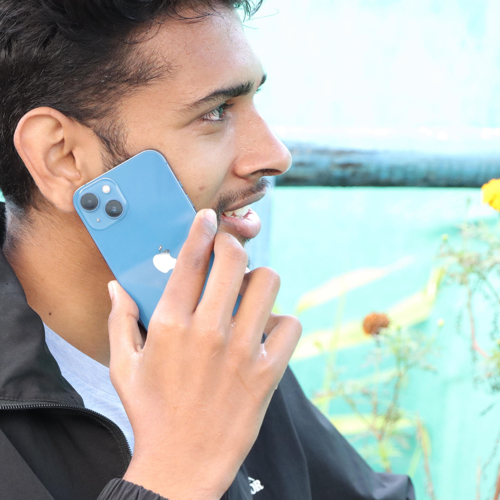

My name is Bijay Raj Poudel.I am from pokhara. I enjoy promoting small companies to help them increase their profits. I’m excited for the opportunity to be part of a team that increases awareness of the businesses in Richmond. I have a strong background in public relations and would love to tell you about the strengths I could bring to this position.”
There are many hobbies like drawing, painting, gardening, stamp collecting, photography, reading, sewing, crafts, embroidery, knitting, cooking, pet care, coin collecting, etc. My favorite hobbies are gardening, coin collecting, photography and traveling. Gardening gives me immense pleasure. When I saw seed sown by me growing into beautiful plants and blooming flowers, it gives me a great sense of fulfillment. I enjoy tendering my plants and watering my garden every day. It gives me satisfaction and helps in keeping myself active and busy. I grow flowers and vegetables in my garden.
copyright 2022 Bijay Raj Poudel